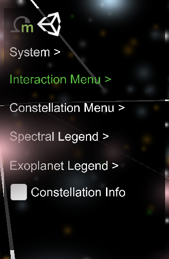
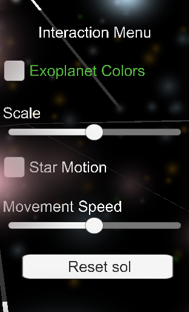
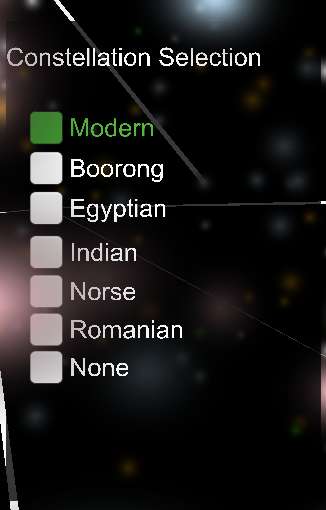
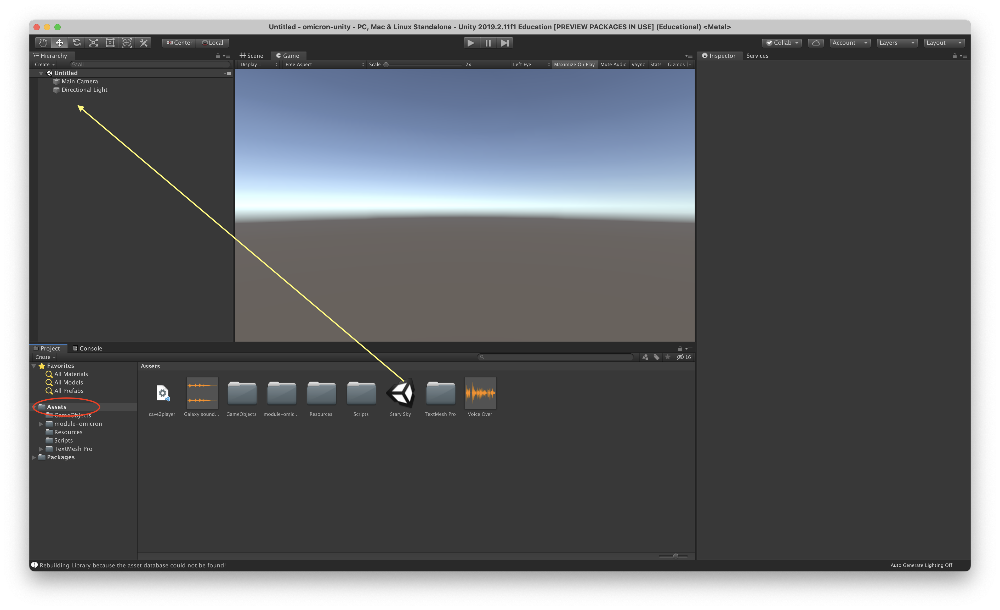
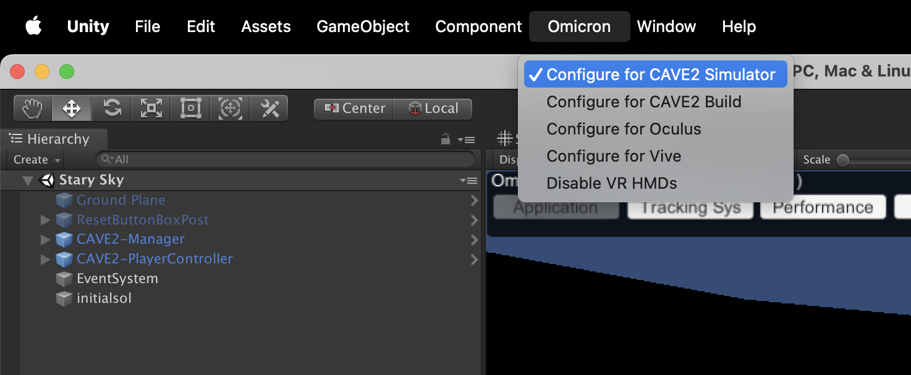
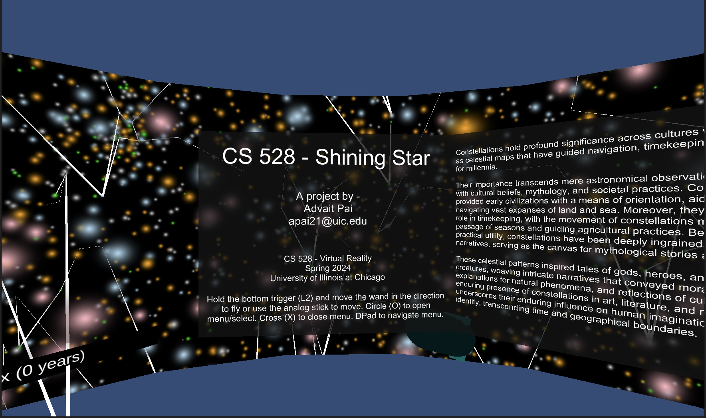
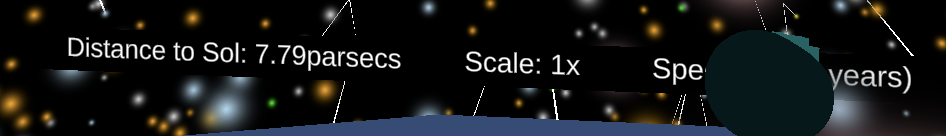
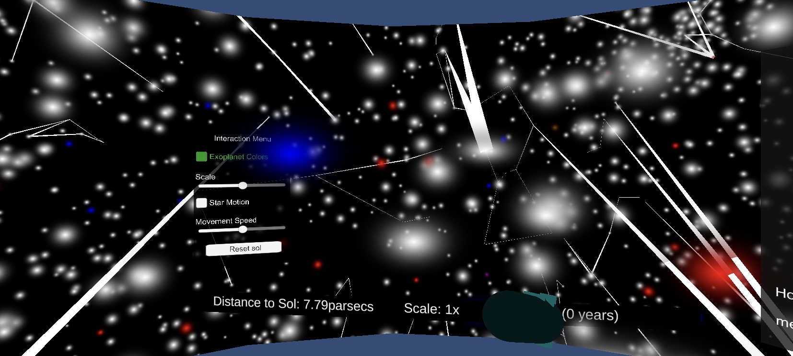
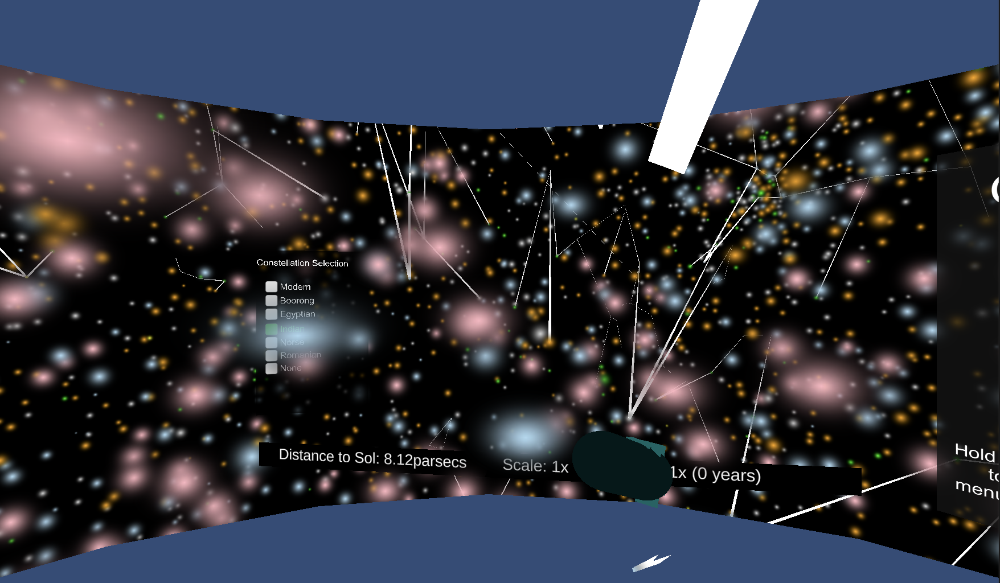

Project By: Advait Pai Course: CS 528 - Virtual Reality University of Illinois Chicago
Section 1 - The Application
About the application
Shining Star is the final project for the Virtual Reality class, CS 528, at the University of Illinois
Chicago. Built using Unity, this immersive application lets users explore the night sky in the CAVE system.
With interactive features like constellation viewing and time manipulation, it merges learning and
entertainment seamlessly, offering a captivating experience in virtual reality.
How you can use the application
The application is designed to be used in the CAVE system, a virtual reality
environment that provides an immersive experience. To know more about the CAVE system you can read here. The CAVE system uses head
tracking glasses and a wand for the user to be able to navigate through the environment. The user is also free
to move around in the given space area. While the CAVE is the most appropriate environment to experience this
application, there are additional options for the user to use this application such as the CAVE2 simulator,
Occulus and Vive. To interact with the application in the Simulator, interactions are given in the
Installation Section.
Things you can do with it
This application has been developed using Unity for the CAVE. The key feature of
the application is its interactive functionality, facilitated through the use of the CAVE wand. Users have the
ability to engage with
the application in various ways, enhancing their exploration experience:



The various menus of the application
Navigate and Orient: Users can fly in any direction and perform rotations (roll, pitch, and yaw)
using one
of the hand controllers. As users traverse the CAVE or maneuver through the dataset, the virtual world
provides feedback on their distance from Sol in parsecs.
Constellation Selection: Users can bring up a menu offering at least five additional sets of
constellations to choose from or opt to display no constellations. The ability to select from multiple
constellations enhances user customization and exploration.
Time Control: Users can start and stop time to observe the evolution of constellations and all
visible
star locations over time. By default, time progresses forward, but users can also rewind time for backward
observation.
Constellation Information: Users can access additional information about one constellation,
enriching
their understanding and exploration of celestial objects.
Color Scheme Adjustment: Users have the option to change the color scheme from stellar type to the
number
of known planets in the system, providing flexibility in visual representation.
Reset Functionality: Users can reset their location, orientation, and time back to the starting
point,
offering a convenient way to return to the initial state of exploration.
Scale Adjustment: Users can change the scale mapping of parsecs to feet, allowing them to increase
or
decrease the distances between stars according to their preference.
Section 2 - The Data:
To be able to display the stars and the constellations, we needed to work with
various datasets. In all we work with 8 datasets and 2 other files. These files can be found in the Assets
folder and the Resources folder.
File Name
Purpose
Source (unmodified)
athyg_31_reduced_m10_cleaned_subset.csv
This file contains the data for all the stars. Initial it is 69MB and has 330341 rows × 34 columns. But
after perform the cleaning, it has 107574 rows × 11 columns.
This file contains the constellation name, number of stars in the constellation, and the hip ids
separated by a space for the Modern constellation dataset.
This file contains the constellation name, number of stars in the constellation, and the hip ids
separated by a space for the Indian constellation dataset.
This file contains the constellation name, number of stars in the constellation, and the hip ids
separated by a space for the Boorong constellation dataset.
This file contains the constellation name, number of stars in the constellation, and the hip ids
separated by a space for the Egyptian constellation dataset.
This file contains the constellation name, number of stars in the constellation, and the hip ids
separated by a space for the Romanian constellation dataset.
This file contains the constellation name, number of stars in the constellation, and the hip ids
separated by a space for the Norse constellation dataset.
This file is the dataset for exoplanets. This file contains the hip id of the star and the number of
planets around it. This file is used to changed the colour scheme of the stars.
The pre-processing performed on the datasets were either performed manually, or using Python and Pandas library. The steps performed are as follows:
Stars Data: To clean this file, we first select a subset of 11 columns since these are the ones we
work with. We remove the files which have null values for X, Y, Z, VX, VY, VZ and Spect entries. Then we
remove the data for which the spectral class does not lie in 'O','B','A','F','G','K','M'. Lastly we only
select stars which are within a range of 25 light years.
Constellation Data: For the 6 constellation data files, we remove all the double spaces and tab
spaces that occur in the file and replace them with a single space. Then we also remove any trailing empty
lines in these files to prevent errors. These files are manually cleaned.
Exoplanet Data: We remove all lines with null values, and then group the values by hip ids to
remove all the duplicates as well. This is done using the Pandas library.
In code, when working with data files, we ensure that the lines are being checked for null values to prevent any
errors with reading the files into Unity.
Section 3 - Installation:
Loading the application:
Clone the repository from this GitHub Link. On the code button, select "Download Zip".
Unzip and open the downloaded folder.
The data folder contains the cleaning.ipynb and exoplanet_clean.ipynb which
contains the code written by me to clean the data.
This can be directly viewd in the GitHub repository or using JupyterNotebook or Visual Studio Code.
The omicron-unity directory contains the project I am developing for the CAVE2. It is a
stripped down
version of the Cube World Example.
Once downloaded, then in Unity Hub, click the "Add" button and then select the subfolder omicron-unity
from the downloaded folder. It should automatically pickup the required Unity Version but if asked,
choose the appropriate version.
The project may take some time to load. Once the assets have been loaded, the Unity window will
launch.
In the "Assets" folder, there is a scene called "Stary Sky". Drag this scene, to the project hierarchy
and delete the "Untitled" scene (or any other such scene). Below is a view of the window.

Once dragged, click the Omicron Tab in the menu and select "Configure for CAVE2 simulator" as shown
below.

For now, we demonstrate how to run the application on the CAVE2 simulator. Once the "Stary Sky" scene
is loaded, click the play button to see the stars and constellations. When
loading, there maybe an error, ignore this for now. Both the "Play" and the "Pause" button will be
selected due to this error. Unselect the "Pause" button and that should allow for the scene to be
viewed.
To use the application on the CAVE, select the "Configure for CAVE2 Build" option and then follow
instructions here.
The sections "Configure a Unity project for use with the CAVE2 Simulator" and "Building on CAVE2"
contain the steps to build the application for the CAVE.
To use the application on the Oculus, select the "Configure for Oculus" and then in the File -> Build
Settings, switch platform to Android, choose the appropriate options, and then "Build and Run".
Interactions in the CAVE2 simulator:
Once the scene is loaded -
WASD keys can be used to move in the world.
QE keys can be used to rotate left and right respectively.
Right-Click to open the menu and use arrow keys to
navigate options, and use the Right-Click to select an option.
Left-Click is used to go back and close the
menu.
For sliders for scale and movement speed, navigate to them using the Right-Click and the arrow keys,
and then move the slider using left and right arrow keys.
Section 4 - Interesting Finds during development and using:
While developing the application, I had to use a combination of both User
Experience knowledge as well as Coding skills. The most important find for me was that it is important to
organise variables and data correctly for efficient usage and re-usage. C# has restrictions on how
variables can be stored, accessed or indexed and since there may be multiple interactions possible with
the system, there are also different functions interacting with the same variable, making it pertinent to
maintain consistency. For this I created a StarData class which would store all values of the individual
star. Any modification, or access for star values when creating/moving/destorying the GameObjects are only
allowed through this class variables, which are held as static throughout hence no local variable errors
happen.
I also understood the importance of how even if we have all the GameObjects
created, just by using the
setActive() calls, we can bring in significant optimisations. I was able to load all the constellation
data before startup, and only toggle between GameObjects when necessary.
When working with creating the LineRenderer, initially I began with trying to delete and redraw lines,
but for efficiency if I wanted to run this for every frame, it would be infeasible. This showed the
importance of how GameObjects are to be handled.
Currently all the stars transform their position and face towards the user at one go, hence this may feel
abrupt to the user and not very natural. To prevent this, as a future scope, the stars could be randomly
accessed within a certain radius and can be updated instead of a single update every x number of seconds.
Given time, I would wish to use some sorting algorithms for the data so I could scale up the number of
stars being implemented for the application. I would like to explore the effect of rendering within the
Field of View as
well. For this project I did not implement Field of View as the CAVE is also meant for collaboration and
with multiple viewers, the field of view is only dependent on the person wearing the tracking glasses.
Section 5 - Optimisations I performed:
Reducing the search space: In general when looping through data to search for matched, like
hip_id, as and when possible, I have put in break or continue statements so that the search space is
reduced. For example, when a hip id needs to be searched for, once found the loop breaks instead of
runing continously.
LineRenderer: For the LineRenderer initially the material I was using was 'Sprites/Default' and
then I was attempting to remove the shadow functionalities from the lines, which was significantly
affecting my startup time. To prevent this, I changed the material to Unlit/Color, which does not have
shadows hence the startup time increased significantly. I also changed useWorldSpace=true for the
LineRenderer.
Shadows:Through the setting of quality and GameObjects being spawned, I have tried to turn off
Cast Shadows and Receive Shadow.
Stars: I have created a prefab of a star using a simple Quad and applying Laser Particle
material. These stars then move there orientation using LookAt() function which is called in code.
Dynamic Rendering with variable thresholds: To keep the frame rate steady, I use dynamic
rendering. First the code checks if the user has moved beyond a certain radius, and if they have moved,
then it sets the stars at a certain radius as active and then reset the last position. Now depending on
if the
stars are moving or not, the threshold changes. Ideally, the threshold should also change when scale
changes but that has not been implemented for this project due to complexity.
Constellation Line Movement: The constellation lines are drawn using LineRenderer. To move the lines, I
store a dictionary of values of hip_id and the location in the space. This dictionary would also update
when motion would occur, or before a different constellation is selected, or if the scale is changed by
the user. Once the dictionary is updated, both the hip_id of the line are stored in it's nanme which are
then indexed in the dicitonary and the lines positons are updated. The dictionary only contains hip_id
of the star which is part of any of the six constellation, hence keeping its size small.
Updating values of GameObjects: When trying to change the scale of the stars, it was important
to
ensure that if I was calculating new X,Y,Z values for the stars, then I would have to make sure the
value was consistent. For example, if the user reduces the scale to 0.5 and then to 0.333, the
computation should be such that value should not become 33% and not 16.5%. Hence I did not overwrite
the values in StarData but only multiplied the position transform of the GameObject by the scale. Also,
values to the GameObject were only updated if it was visible, otherwise only its corresponding value in
the StarData class is updated. This I assumed would reduce the computational complexity as well.
Tradeoff between code organization and variable sharing: Since multiple objects and interactions
rely on the same set of variables, either all functions could be in one single class, or variables need
to be shared. Hence in my project, StarDataLoader is the main class, from which all other classes
inherit the variables and work with. This also had additional advantages as if I wanted to create one
script to handle interactions, and the other to handle constellations, any shared variable such as
constellation_type could be accessed by both scripts. This also helped in reducing the number of errors
that could occur due to local variables.
Some Screenshots:

Introduction Panel

Information Panel at the foot of the CAVE

Exoplanet Colours

Constellation Change